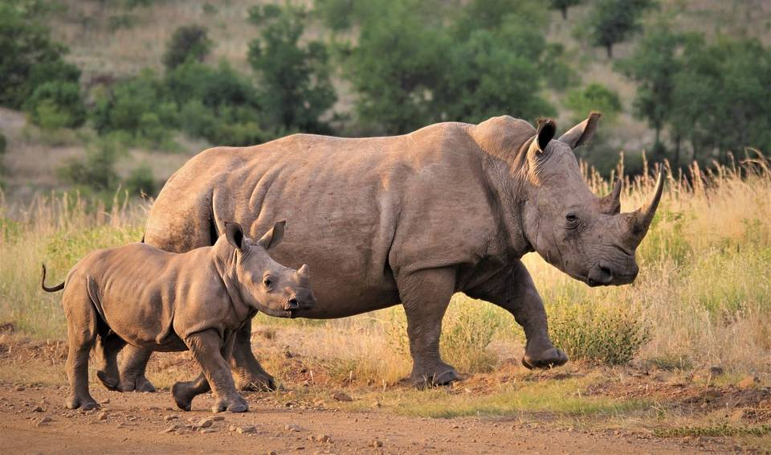
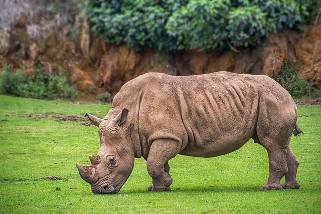

| 科學分類(綱) | |
| 哺乳綱 | |
| 科學分類(科) | |
| 犀牛科 | |
| 高度 | |
| 肩部1.7 - 1.9米 | |
| 重量 | |
| 1.6 - 2.3公噸 | |

|
飲食 |
| 草食性動物 | |
| 孕期 | |
| 16 - 18個月 | |
| 保育 | |
| 近危物種 |
白犀牛是非洲最大的草食性哺乳動物之一，也是五種現存犀牛種類中體型最大的一種。 牠們的名字來自於牠們的嘴巴和身體的顏色都是灰色的，但實際上牠們的皮膚是灰褐色的。 白犀牛分成南方白犀牛和北方白犀牛兩種，其中南方白犀牛是更為常見的一種。
白犀牛的體型龐大，肩高約1.5-1.8米，體長可達4米，體重可達2,300公斤以上。 牠們有一個巨大的頭部和長而寬的嘴巴，這讓牠們能夠輕易地切割和咀嚼草和其他植物。 牠們的視力比較差，但嗅覺和聽覺非常靈敏，能夠探測到潛在的危險。
白犀牛通常生活在非洲的草原和稀疏的樹木地帶，牠們是草食性的，主要以草和其他植物為食。 白犀牛的壽命約為40-50年左右，但牠們目前正受到偷獵、棲息地破壞和人類活動的威脅，牠們的數量急劇下降。 因此，白犀牛被列為瀕危物種，需要全球關注和保護。